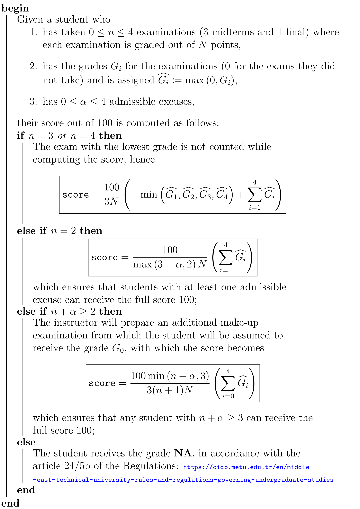

{kind=link}

For a formal answer to this question, see
and
More informally, Phys331 introduces the concepts of electrostatics and magnetostatics, and expands on how one can mathematically model (and, if posible, analytically understand) these natural phenomena. Phys332 then builds on these to introduce electrodynamics with which one extends to advanced topics such as electromagnetic waves, radiation, and special theory of relativity.
This is a must course for any undergraduate student in the department of Physics (see the curriculum). Assuming that you have taken a sufficient set of prerequisite courses (see Phys331 and Phys332), you should take these courses too.
I am teaching Phys331 in this semester (20251) and the classes are as follows:
| Tuesday | 13:40-15:30 | — P1 |
| Wednesday | 13:40-15:30 | — P2 |
See here for the location of classrooms!
The overall score for the course is calculated with the following algorithm:

_____________________________________
Phys331
_____________________________________
(2) Magnetostatics: The magnetic field, magnetic vector potential
(3) Stationary electromagnetic fields in matter: Polarization and magnetization, the field of polarized and magnetized objects, electric displacement field and magnetic field intensity, analysis of dielectric and diamagnetric materials
______________________________________________
Phys332
_____________________________________
(1) Electrodynamics: Electromotive force, electromagnetic induction, Maxwell’s equations
(2) Conservation laws: Charge and energy, momentum
(3) Electromagnetic waves: Analysis in vacuum, analysis in matter, further topics (absorption, dispersion, wave guides, transmission, radiation to infinity, etc.)
(4) Relativistic treatment: Special theory of relativity, relativistic electrodynamics